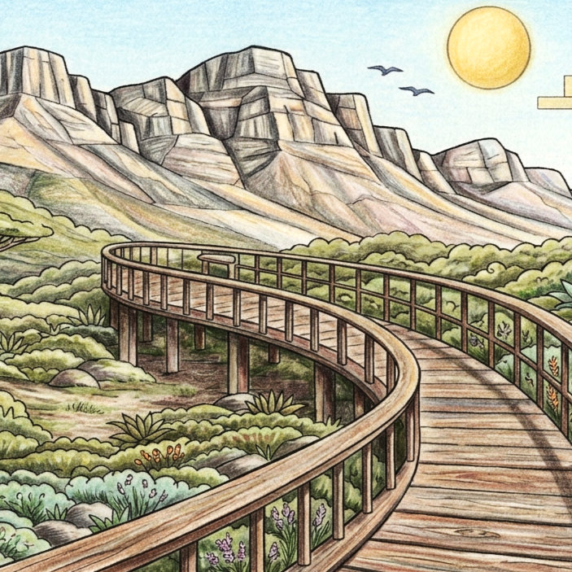
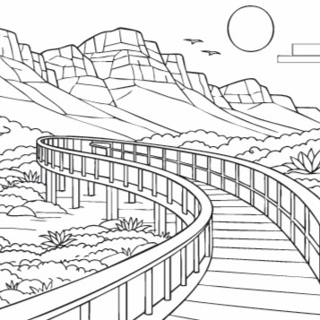

Table Mountain
First climbed and mapped in the 16th century, Table Mountain is Cape Town's most famous natural landmark, known for its flat summit and sweeping views.
Discover the architecture, neighbourhoods and everyday icons of Cape Town through clean Bauhaus-inspired line illustrations, ready for your colours.
From Table Mountain to Table Mountain cable car, this edition explores the sights, local culture and visual character of Cape Town through a gallery of line illustrations.
Designed for adults who love travel, architecture and creative downtime, the pages use bold composition and open spaces for mindful colouring.
VIEW THE CAPE TOWN BOOK

PREVIEW: CAPE TOWN · LINE ART & COLOUR
Discover the places and details that inspired the illustrations in this edition.
First climbed and mapped in the 16th century, Table Mountain is Cape Town's most famous natural landmark, known for its flat summit and sweeping views.
Named by Dutch settlers in the 17th century, Lion's Head is famous for its scenic hiking route and 360-degree views over Cape Town and the Atlantic coast.
Built mainly in the 18th and 19th centuries, the brightly painted Bo-Kaap houses are famous for their Cape Malay heritage, cobbled streets, and striking colors.
Named by Portuguese explorer Bartolomeu Dias in 1488, the Cape of Good Hope is famous for its dramatic cliffs, wild coastline, and symbolic place in exploration history.
Dating back over 500 million years, these massive, smooth granite boulders are famous for naturally dividing Clifton into four distinct beaches and shielding beachgoers from fierce winds.
Developed alongside Camps Bay's beachfront in the 20th century, the promenade is famous for its lively cafés, palm-lined views, and sunset walks.
Opened in 2009, Truth Coffee is famous for its steampunk interior, specialist coffee, and creative design-led atmosphere.
Built in 1882, the Clock Tower is famous as a historic harbor landmark at the heart of the V&A Waterfront.
First establishing a colony here in 1982, Boulders Beach is world-famous for offering a rare chance to see wild African penguins nesting up close.
Established in the early 2000s, the market is famous for its artisan food, design stalls, and lively weekend atmosphere.
Opened in 2014, the Boomslang Tree Canopy Walkway is famous for its curved steel design and elevated views over Kirstenbosch National Botanical Garden.
A long-standing local tradition, the braai is famous as South Africa's social outdoor barbecue culture centered on fire, food, and gathering.
A familiar modern coastal scene, Cape Town surfing is famous for its beaches, powerful Atlantic swells, and active surf culture.
Established from the 17th century onward, Cape Town's vineyards are famous for wine estates, mountain backdrops, and the Cape Winelands region.
Opened in 1929 and modernized later, the cable car is famous for carrying visitors to the summit of Table Mountain with rotating 360-degree views.
Explore the Cape Town edition and the wider Page Craft Studio city colouring book collection.